La vidéo de *Pursuing AI* explore les capacités révolutionnaires du modèle « GPT-6 Astra », mis en scène à travers des démonstrations saisissantes allant de la génération 3D complexe au développement de jeux vidéo et au design web. L'analyse démontre comment cette intelligence artificielle dépasse la simple production d'actifs isolés pour orchestrer des structures de données sous-jacentes et des architectures logiques cohérentes. Le créateur adopte une approche méthodique et comparative, décortiquant les résultats de manière séquentielle — de la génération urbaine paramétrique à la modélisation industrielle issue de plans 2D — afin de prouver que l'IA peut structurer des environnements interactifs et modifiables.
L'analyse de la méthode révèle un processus itératif s'appuyant sur des flux de travail multi-agents et des boucles de rétroaction, permettant de passer d'un simple concept textuel à des applications pleinement fonctionnelles, telles qu'un jeu de conduite urbaine ou un clone de survie inspiré de Minecraft doté d'inventaires et de systèmes de fabrication. La vidéo met également en lumière l'impact des réglages de paramètres sur la qualité finale et illustre l'exécution pas à pas de flux de travail en peinture numérique et en développement front-end. Pour les créateurs de contenu et les développeurs, ces avancées redéfinissent les limites de la productivité, offrant des gains de temps spectaculaires et ouvrant la voie à une personnalisation poussée des environnements virtuels.
Salut les gars ! On a eu GPT-6 avant GTA 6, et aujourd'hui je vais vous montrer ce que GPT-Astra peut réellement générer à travers différentes catégories, de la génération 3D au développement de jeux, en passant par le design web et bien plus encore. Et croyez-moi, certaines des choses qu'il peut créer sont absolument dingues.
Interface & Outils : Interface de jeu vidéo (Minecraft) et interfaces de sites web interactifs en 3D et design web.
Contenu textuel & Code : Mention "*2x speed" sur Minecraft ; titres "Stamford Bridge", "A corner of London" et options de contrôle en haut et en bas de l'écran 3D ; en-tête "Art.Car", texte "FLAWLESS CLEAN FOR YOUR CAR" et statistiques sur le site web.
Action / Démonstration : Démonstration visuelle de différents types de créations générées par l'IA, allant d'une construction dans Minecraft à des interfaces web interactives et de design.
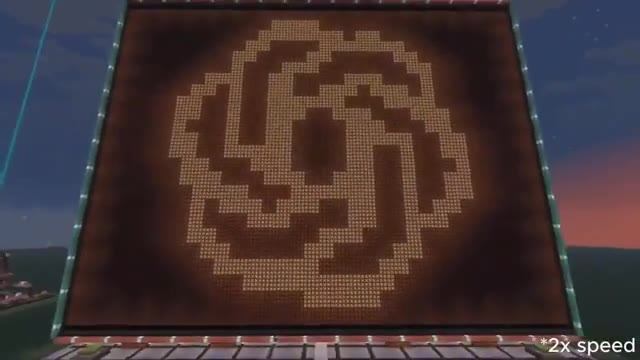
🔍 Agrandir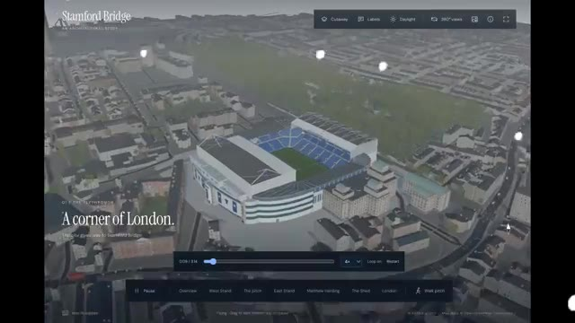
🔍 Agrandir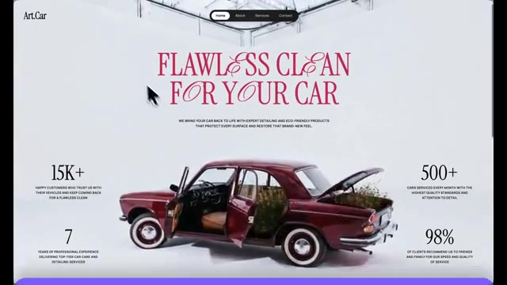
🔍 AgrandirNous allons examiner ces générations une par une afin que vous puissiez voir par vous-même de quoi ce nouveau modèle est capable. Alors prenez vos chips, installez-vous confortablement et concentrez-vous sur la vidéo car nous avons beaucoup de choses à couvrir. Allez, c'est parti. C'est Pursuing AI et vous regardez le Research Report. Alors, commençons par la génération 3D. Et honnêtement, il y a quelque chose de vraiment intéressant à propos de ce premier exemple. À première vue, vous pourriez regarder ceci et vous dire, d'accord, c'est une ville 3D générée par IA, mais il y a en fait beaucoup plus de choses qui se passent sous la surface. Nous avons cette ville entière
Interface & Outils : Interface de la plateforme web de visualisation de données 3D 'dat.city' (world data playground), comportant des menus de districts, une barre de recherche de données et une barre d'outils de navigation en bas.
Contenu textuel & Code : Texte "dat.city", "WORLD DATA PLAYGROUND", "Districts", "Search the data...", et "NOW PLAYING Bricklight Anthem". Piliers de données en 3D colorés dans des cercles lumineux sur fond de grille de données.
Action / Démonstration : Navigation et survol en 3D au-dessus d'une ville virtuelle, puis basculement vers une vue de visualisation de données souterraines sur la plateforme dat.city.
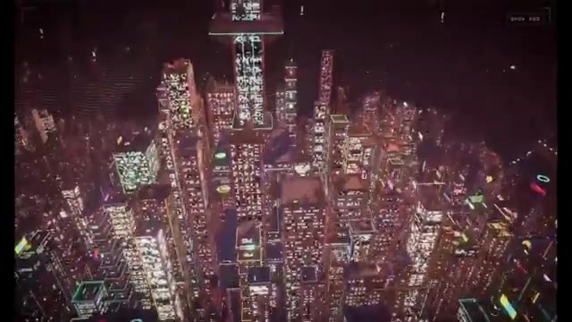
🔍 Agrandir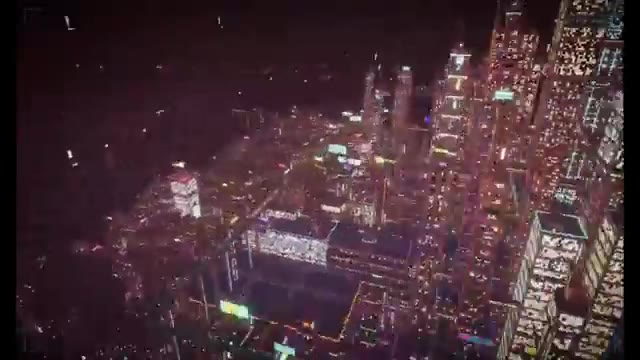
🔍 Agrandir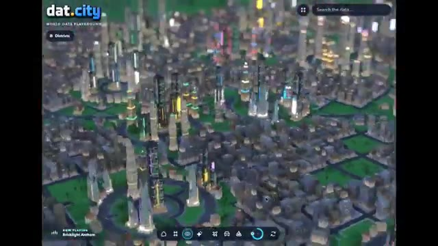
🔍 Agrandir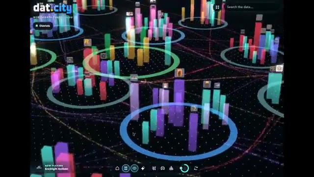
🔍 Agrandirenvironnement avec différents bâtiments, routes, quartiers, paysages et tous ces éléments différents placés à travers la scène. Et ce qui rend la chose encore plus intéressante, c'est que le placement de ces éléments n'est pas complètement aléatoire. L'utilisateur qui a partagé cette génération nous a également montré un aperçu du graphique d'arrière-plan de la ville, et c'est plutôt fou. Vous pouvez voir différents nœuds, relations, quartiers et connexions qui composent l'environnement. Donc, au lieu de simplement générer un tas d'objets 3D et de les jeter sur un écran, il y a une structure sous-jacente connectant différentes parties de la ville. Et l'utilisateur a également mentionné qu'il peut contrôler le
Interface & Outils : Interface web de dat.city (World Data Playground) et capture d'écran du réseau social X (Twitter).
Contenu textuel & Code : Texte de l'interface dat.city ("dat.city", "WORLD DATA PLAYGROUND", "Districts", "Search the data...", "NOW PLAYING Bricklight Anthem"). Texte du tweet de Ryan Sael (@RyanSael) : "BUT / I can control the placement however I want. / Here's a peak of the backend showing graph for the city:", avec un schéma de graphe montrant des nœuds et des relations en arrière-plan.
Action / Démonstration : Navigation et exploration visuelle de l'environnement virtuel 3D de dat.city, puis affichage du graphique de données en arrière-plan (backend graph).
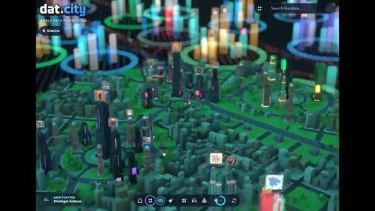
🔍 Agrandir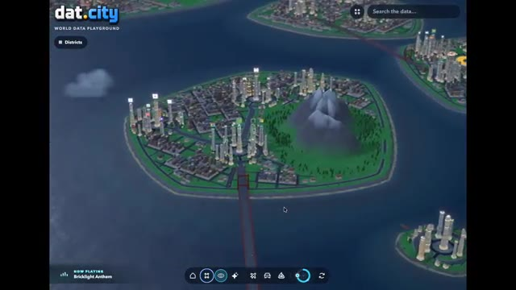
🔍 Agrandir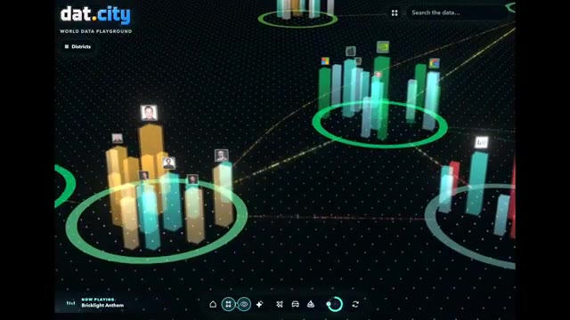
🔍 Agrandir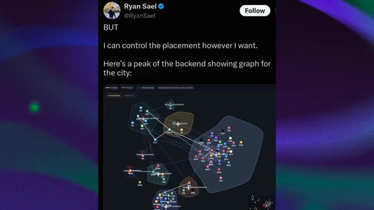
🔍 Agrandirle placement comme vous voulez. C'est important parce que vous n'êtes pas nécessairement bloqué avec la disposition que l'IA vous donne. Vous pouvez réellement contrôler où vont les différents éléments et comment l'environnement est organisé. Et il y a aussi cette autre vue où vous pouvez voir les différents districts représentés sous forme de groupes séparés de structures 3D. Donc quand vous mettez tout cela ensemble, cela devient beaucoup plus intéressant que de simplement dire que l'IA a généré une ville en 3D. Nous examinons un environnement doté d'une structure de données sous-jacente, de relations entre les différents éléments et d'un contrôle sur la façon dont ces éléments sont positionnés. Et c'est là que le contenu 3D généré par l'IA commence à devenir vraiment intéressant.
Interface & Outils : Application web "dat.city" (World Data Playground) avec interface de navigation 3D et barres d'outils de visualisation.
Contenu textuel & Code : Texte du tweet de Ryan Sael ("BUT I can control the placement however I want. Here's a peak of the backend showing graph for the city:"), graphe de nœuds et liens de données, interface de dat.city avec barres de recherche, boutons de districts et lecteur audio ("NOW PLAYING Bricklight Anthem").
Action / Démonstration : Navigation et basculement entre la vue 3D de la ville urbaine interactive, le graphe de données sous-jacent et la vue des districts sous forme de structures 3D.
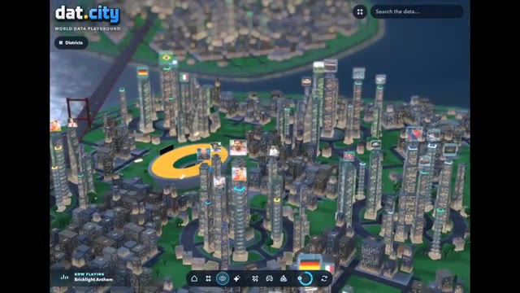
🔍 Agrandir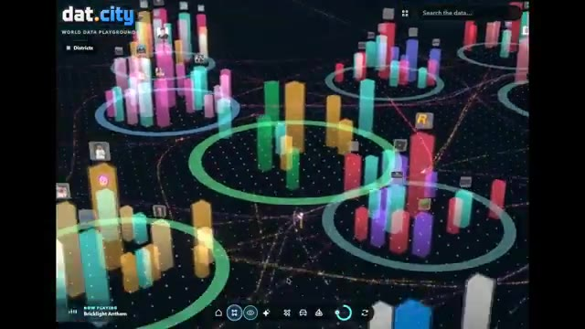
🔍 Agrandir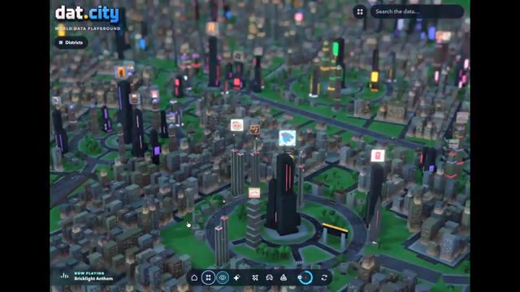
🔍 AgrandirImaginez pouvoir décrire le genre de monde que vous voulez, demander à l'IA de construire l'environnement initial, puis d'entrer à l'intérieur de cet environnement et de le modifier comme vous le souhaitez. Cela peut être utile pour le développement de jeux, les simulations, la visualisation, les sites web interactifs, et bien plus encore. Et rappelez-vous, ce n'est qu'un exemple. Vous pouvez réellement essayer cela par vous-même. Le lien est dans la description.
Interface & Outils : Interface de la plateforme web interactive dat.city ("World Data Playground") avec barre de recherche, menu des districts et barre d'outils de navigation en bas d'écran. Capture d'écran d'un tweet du compte de Ryan Sael.
Contenu textuel & Code : Texte "dat.city", "WORLD DATA PLAYGROUND", "Search the data...", "Districts", "NOW PLAYING Bricklight Anthem", et sur le tweet "Ryan Sael @RyanSael", "Follow", "dat.city — World Data Playground", "From dat.city". Icônes de géants de la tech (Apple, Google, Nvidia, Microsoft).
Action / Démonstration : Exploration interactive en 3D d'une ville virtuelle générée par IA montrant différents districts, avec affichage d'icônes d'entreprises, puis affichage d'une publication Twitter illustrant le projet.
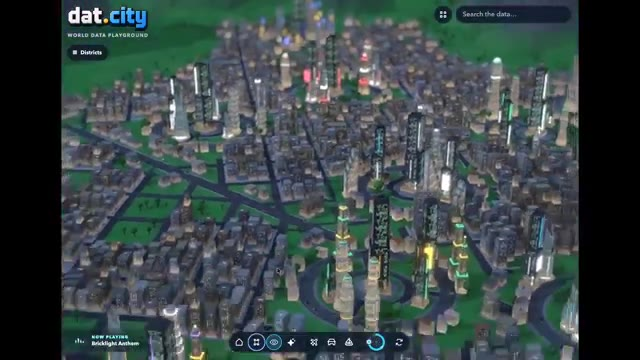
🔍 Agrandir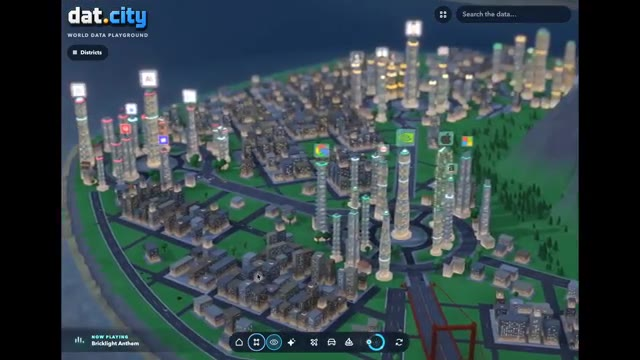
🔍 Agrandir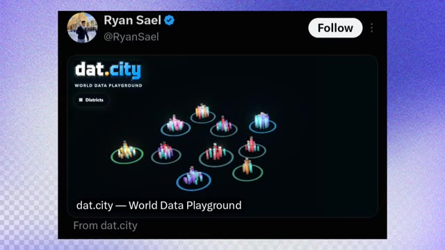
🔍 AgrandirPassons donc à une autre génération 3D. Et celle-ci adopte une approche complètement différente. Un créateur a pris un vieux dessin technique d'une locomotive à vapeur et l'a donné à Astra pour le reconstruire dans Blender. Et regardez simplement le résultat. Selon le créateur, Astra a généré 3 295 objets entièrement modifiables pour recréer le train. Et la partie vraiment cool, c'est que vous pouvez séparer le modèle en différentes parties et travailler réellement avec elles. Donc, au lieu d'obtenir un seul modèle 3D plat, vous obtenez quelque chose qui peut être édité et modifié à l'intérieur de Blender. Vous pouvez également contrôler
Interface & Outils : Interface du réseau social X (Twitter) et du logiciel de modélisation 3D Blender.
Contenu textuel & Code : Textes des tweets de Ryan Sael et Tom Krcha (« So how good really is GPT-6 Astra at 3D modeling? I took an old drawing of a steam train... »), arborescence des calques Blender listant les 3 295 objets (ex: 'Axle 1 horn guide', 'Bell open bronze casting').
Action / Démonstration : Affichage de publications sur les réseaux sociaux et navigation/visualisation d'un modèle 3D complexe composé de milliers d'objets dans Blender.
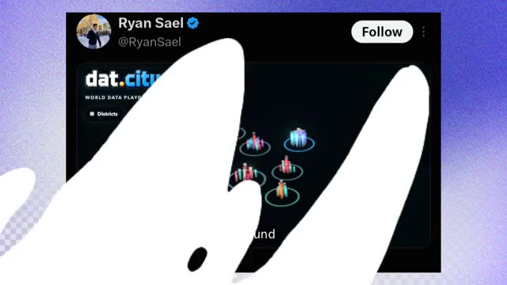
🔍 Agrandir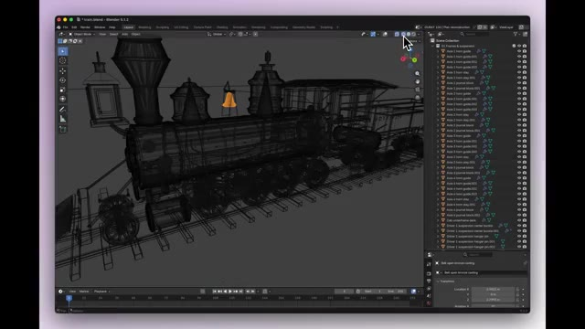
🔍 Agrandir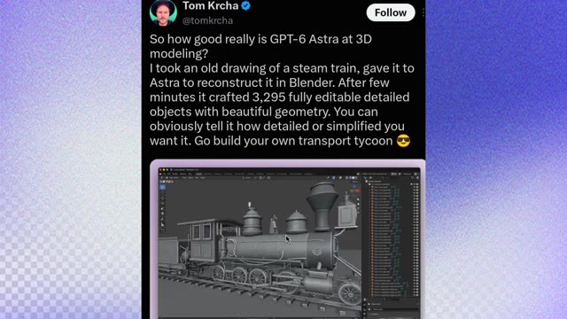
🔍 Agrandirà quel point vous voulez que le modèle final soit détaillé ou simplifié. Maintenant, évidemment, ce n'est pas parfait, il y a encore des zones qui nécessitent un travail supplémentaire. Mais le fait qu'Astra puisse prendre un dessin technique 2D et le transformer en un modèle 3D complexe et modifiable est vraiment impressionnant, et cela vous donne une assez bonne idée de la direction que pourrait prendre la modélisation 3D assistée par IA.
Interface & Outils : Logiciel de modélisation 3D Blender (version 5.1.2) affichant une arborescence de scène détaillée, une fenêtre de visualisation 3D en mode filaire et ombré, ainsi qu'une fenêtre contextuelle montrant le plan technique 2D d'origine (train.jpg).
Contenu textuel & Code : Interface complète de Blender avec le panneau "Scene Collection" listant les différents composants de la locomotive (frames & suspension, axle horn guide, driver suspension, etc.), la timeline en bas, et l'arborescence des calques.
Action / Démonstration : Navigation et inspection des différents éléments géométriques du modèle 3D de la locomotive dans l'espace de travail Blender, démontrant la structure éditable générée par l'outil d'IA Astra.
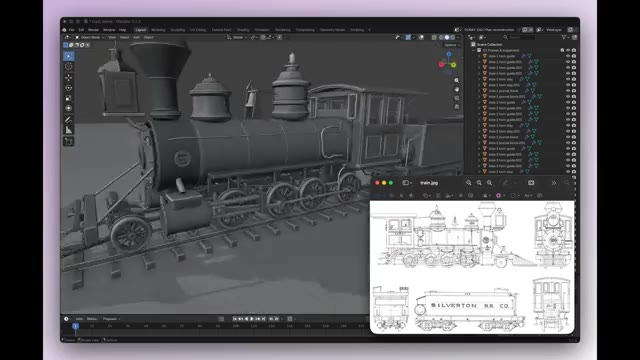
🔍 Agrandir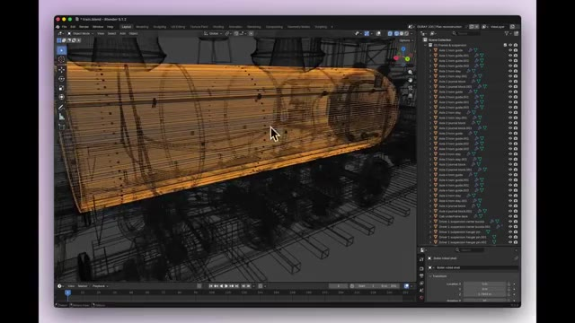
🔍 Agrandir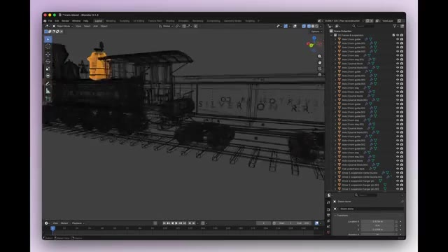
🔍 AgrandirMais le prochain exemple pousse cette idée encore plus loin. Et ensuite le joueur monte dans la voiture. Maintenant nous roulons à travers la ville, et vous pouvez voir le trafic, les bâtiments, les routes et l'environnement qui changent à mesure que le joueur se déplace. Il y a même une interface de véhicule affichant des éléments comme la vitesse, le rapport de vitesse et l'option de quitter le véhicule. Et c'est là que cela commence à ressembler davantage à un vrai jeu plutôt qu'à une simple démo 3D.
Interface & Outils : Logiciel 3D Blender et moteur de jeu interactif avec interface utilisateur (HUD, mini-carte, indicateur de vitesse).
Contenu textuel & Code : Blocs de code/interface Blender, plaques d'immatriculation, indication "E EXIT VEHICLE", vitesse en km/h, rapport engagé (GEAR 1), carte de navigation avec noms de zones urbaines. [DESC_ACTION] Navigation dans Blender puis démonstration en temps réel d'un jeu vidéo interactif avec conduite de véhicule et affichage d'une carte de navigation.
Action / Démonstration : Démonstration pédagogique et présentation du workflow.
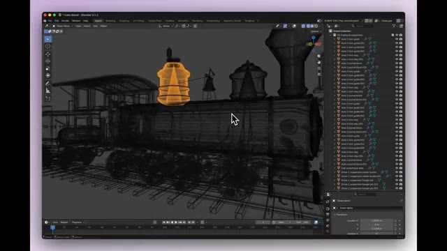
🔍 Agrandir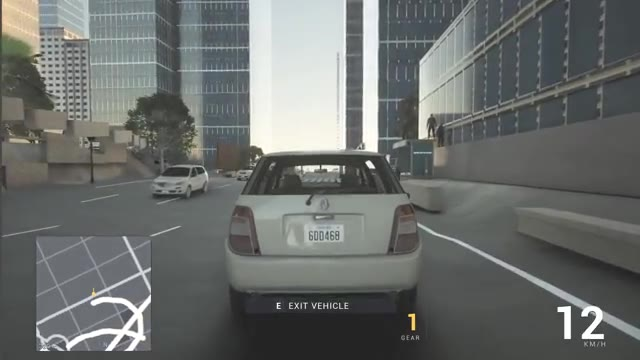
🔍 Agrandir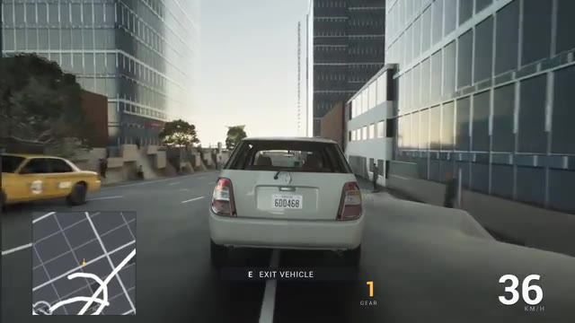
🔍 Agrandir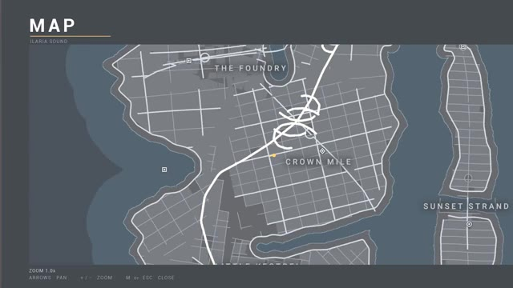
🔍 AgrandirLe créateur a également mentionné l'utilisation de multiples sous-agents en boucles lors de la construction du jeu. Donc au lieu de penser à l'IA comme écrivant simplement un bout de code et s'arrêtant là, vous examinez un flux de travail où différentes tâches peuvent être traitées de manière répétée. Maintenant, ce n'est évidemment pas GTA 6. L'échelle et la complexité d'un jeu AAA massif se situent à un tout autre niveau.
Interface & Outils : Navigateur web affichant une publication sur la plateforme X (anciennement Twitter).
Contenu textuel & Code : Publication de l'utilisateur @rick_boers affirmant : "I just made this GTA 6 clone with ChatGPT 6 Astra on Ultra setting. I used a lot of subagents in loops and it looks so good! The graphics are like of games that cost millions..." Accompagné d'une image/vidéo du jeu montrant une voiture sur une route entre des immeubles.
Action / Démonstration : Affichage à l'écran de la publication sur les réseaux sociaux pour illustrer le post du créateur concernant la création de jeux par IA.
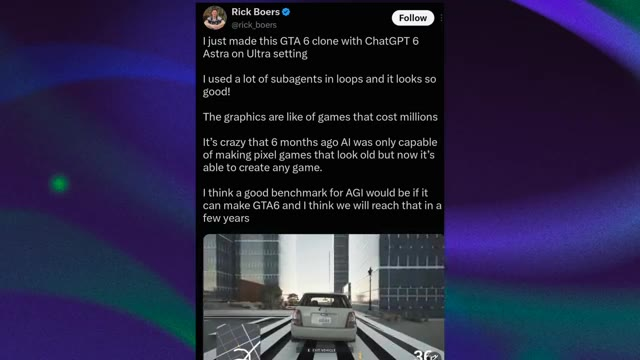
🔍 AgrandirMais ce n'est pas vraiment le sujet. Ce qui est intéressant, c'est que quelqu'un puisse passer d'une idée à un jeu 3D jouable avec une ville, des véhicules, de la circulation, des personnages, une interface utilisateur et des systèmes de jeu, et cela montre comment l'IA pourrait commencer à devenir utile dans des parties beaucoup plus importantes du processus de développement de jeux. Et nous n'en avons pas fini avec les jeux, car le prochain exemple va dans une direction complètement différente.
Interface & Outils : Démonstration visuelle d'un moteur de jeu 3D ou d'un prototype de jeu vidéo généré par IA montrant des environnements urbains interactifs.
Contenu textuel & Code : Environnement virtuel 3D texturé comprenant des bâtiments urbains, des véhicules (voitures, vans), du trafic routier, des lampadaires, de la végétation et des personnages modélisés.
Action / Démonstration : Défilement fluide de la caméra à travers différents angles de vue (rue, aérienne, place publique) au sein de la ville 3D interactive générée par IA pour illustrer le potentiel des outils de développement de jeux.
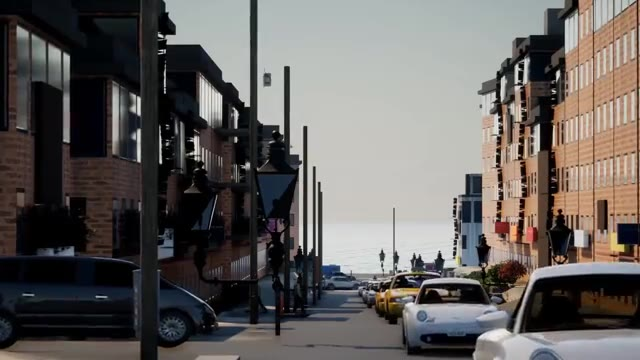
🔍 Agrandir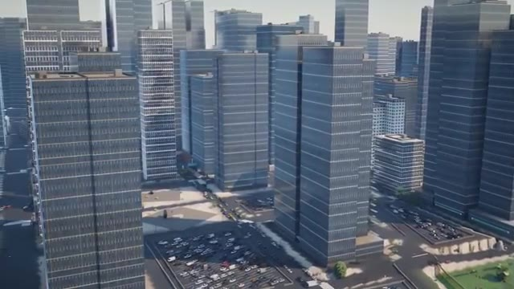
🔍 Agrandir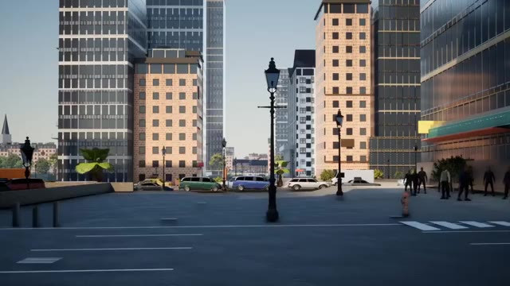
🔍 AgrandirSi vous avez déjà joué à Minecraft, celui-ci va vous sembler plutôt familier. Il s'agit d'un jeu de survie de style Minecraft généré avec Astra. Vous avez un monde basé sur des blocs avec des montagnes, des arbres, de l'eau, des maisons, des fermes et différentes zones que vous pouvez explorer. Mais il ne s'agit pas seulement de se promener. Il y a un inventaire, une barre d'accès rapide, des barres de santé et de faim, différents objets et même un système de fabrication.
Interface & Outils : Jeu vidéo de type Minecraft généré par Astra / Interface utilisateur de jeu de survie (barre de vie, faim, inventaire, menu de craft).
Contenu textuel & Code : Éléments de jeu textuels et visuels : nom "WILDWOOD", barres de vie (coeurs) et de faim, grille de fabrication 3x3, inventaire contenant 3 bâtons et 12 blocs de bois, commandes affichées en bas de l'écran.
Action / Démonstration : Exploration d'un monde virtuel généré par IA et affichage des différentes interfaces de jeu (inventaire et craft).
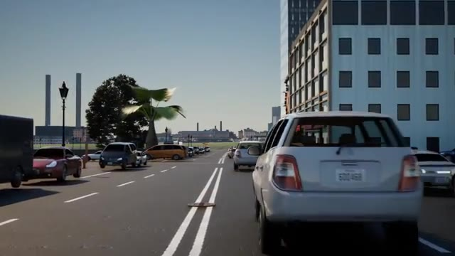
🔍 Agrandir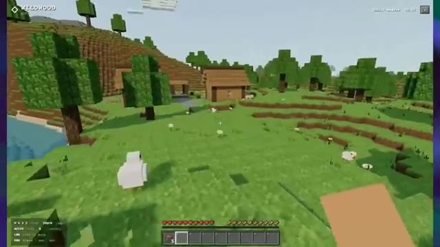
🔍 Agrandir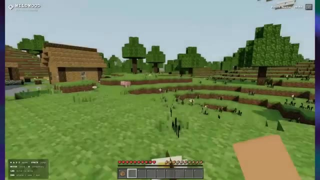
🔍 Agrandir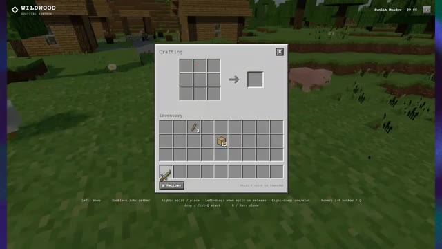
🔍 AgrandirVous pouvez réellement voir le joueur fabriquer une pioche puis l'utiliser tout en explorant le monde. Et c'est ce qui rend cet exemple intéressant. Nous ne regardons pas seulement un environnement généré. de multiples systèmes de jeu travaillant ensemble pour créer une véritable expérience jouable. Nous avons déjà vu le jeu de style GTA, et maintenant nous regardons un type de jeu complètement différent avec des mécaniques complètement différentes, et c'est ce que je voulais mettre en valeur ici.
Interface & Outils : Interface du jeu vidéo "WILDWOOD" (survival sandbox) comprenant une barre d'inventaire rapide en bas, des indicateurs de santé/vies, des contrôles affichés en bas à gauche et un menu d'inventaire/coffre.
Contenu textuel & Code : Texte du logo "WILDWOOD - SURVIVAL SANDBOX", commandes clavier en bas à gauche (WASD: move, SPACE: jump, TAB: inventory, etc.), interface de coffre (Chest) avec divers matériaux et icônes d'objets, et nom du lieu "Oakridge Village" en haut à droite.
Action / Démonstration : Le joueur explore le monde, manie une pioche en bois, interagit avec des coffres pour gérer son inventaire et récolte des ressources dans un champ de blé.
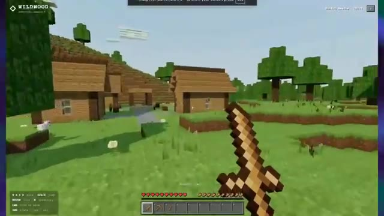
🔍 Agrandir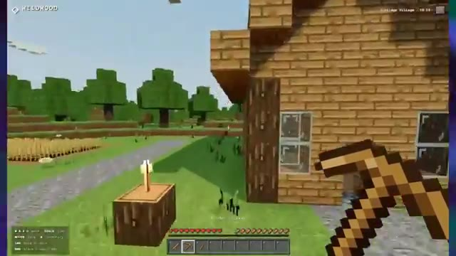
🔍 Agrandir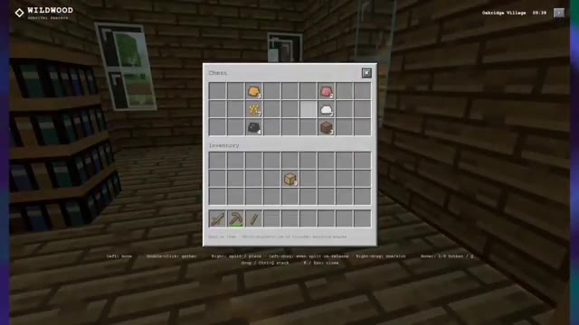
🔍 Agrandir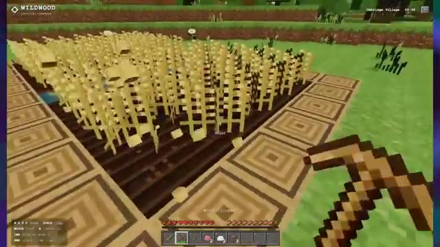
🔍 AgrandirAstra n'est pas limité à un seul type de jeu. Il peut générer des expériences très différentes selon ce que vous lui demandez de créer. Mais il y a une comparaison supplémentaire intéressante à examiner. Ici, nous avons le même type de génération de jeu exécuté avec différents paramètres d'Astra, et vous pouvez immédiatement remarquer certaines différences. Le paramètre le plus élevé produit un résultat plus détaillé et soigné, en particulier dans l'environnement et la qualité visuelle globale. Le paramètre moyen est plus simple, mais il est toujours capable de produire l'expérience de jeu de base. Cela vous donne donc une assez bonne idée de la façon dont la modification des paramètres du modèle peut affecter la génération finale. Et honnêtement, si le moyen
Interface & Outils : Interface de jeu vidéo généré par IA (moteur Astra / style Minecraft et jeu de plateforme 3D).
Contenu textuel & Code : Texte "WILDWOOD" en haut à gauche, barre d'inventaire et de santé en bas. Sur l'image 2, texte "GPT-6-Astra (Max)" et "GPT-6-Astra (Medium)" avec des compteurs de score et un personnage bleu de type Sonic en train de courir.
Action / Démonstration : Démonstration comparative d'un jeu généré par IA montrant un gameplay à la première personne (style Minecraft) puis une comparaison côte à côte entre deux réglages de modèle différents (Max vs Medium).
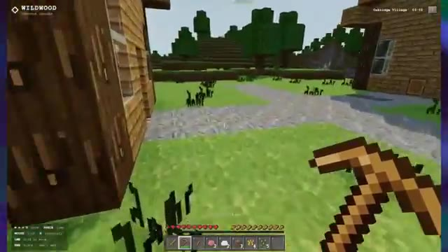
🔍 Agrandir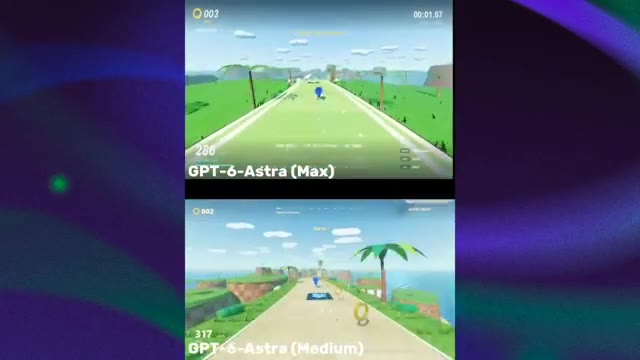
🔍 Agrandirla version peut déjà produire quelque chose comme ça, la version haut de gamme devient assez intéressante. Mais maintenant, laissons de côté le développement de jeux pendant un moment et examinons quelque chose de complètement différent. Ce prochain exemple est un flux de travail de peinture numérique. Et au lieu de simplement vous montrer l'image finale, Astra construit réellement l'œuvre d'art étape par étape. Vous pouvez la voir commencer par une toile de base, puis construire le contour, ajouter les couleurs, travailler sur les cheveux et les vêtements, et ajouter progressivement les plus petits détails. Et à la fin, cela se transforme en cette illustration complète de Hatsune Miku. Ce que je trouve intéressant ici, c'est que vous voyez le processus plutôt
Interface & Outils : Interface logicielle de "Code Paint" pour la peinture numérique générée par code, ainsi qu'une interface de test de jeu montrant les performances de modèles ("GPT-6-Astra").
Contenu textuel & Code : Texte à l'écran : "GPT-6-Astra (Max)", "GPT-6-Astra (Medium)", "NICE RUN!", "00:24.59", "CODE PAINT", "初音ミク" (Hatsune Miku), lignes de code JavaScript pour le dessin de canvas (ex: `ctx.moveTo`), et liste des étapes du processus artistique (fond de toile, contours, couleurs, cheveux, vêtements).
Action / Démonstration : Le flux de travail numérique montre la génération et le tracé progressifs d'une illustration étape par étape, passant d'un simple contour à un dessin entièrement coloré, accompagné de contrôles de lecture et de vitesse (2X).
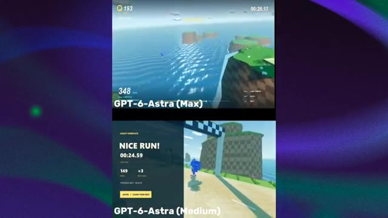
🔍 Agrandir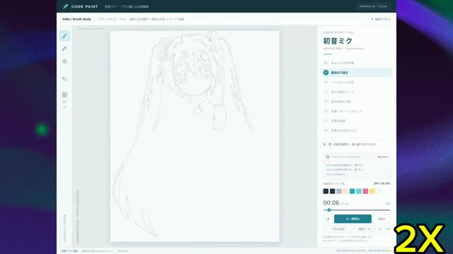
🔍 Agrandir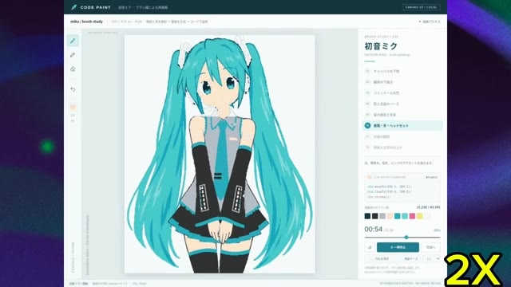
🔍 Agrandirque le résultat final. Ça montre essentiellement comment un système d'IA peut aborder une œuvre d'art numérique étape par étape. Et maintenant, passons à une autre grande catégorie : le développement front-end. Et celle-ci est assez impressionnante parce qu'Astra peut prendre une idée et la transformer en site web complet. Ici, vous pouvez voir qu'il a créé un site web complet de préparation esthétique automobile avec navigation, typographie, statistiques, différentes sections et un grand visuel juste au centre. Et la partie intéressante, c'est que ça ne ressemble pas seulement à une page basique générée par IA. Les différents éléments fonctionnent réellement ensemble pour former un
Interface & Outils : Logiciel de création artistique Code Paint et navigateur web affichant un site web généré par IA.
Contenu textuel & Code : Code Paint (Hatsune Miku, Canvas 2D / Local, 01:18, code JS/HTML visible). Site web "Art.Car" avec navigation (Home, About, Services, Contact), titre "FLAWLESS CLEAN FOR YOUR CAR", statistiques (15K+, 500+, 7, 98%) et menu de services ("Ceramic Coating 9H", "Full Exterior Polish", "Paint Correction & Restore").
Action / Démonstration : Démonstration du processus de création d'une œuvre étape par étape, transition textuelle, puis présentation interactive d'un site web complet généré par IA avec navigation entre les sections et affichage des détails.
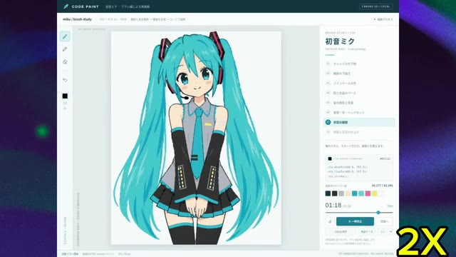
🔍 Agrandir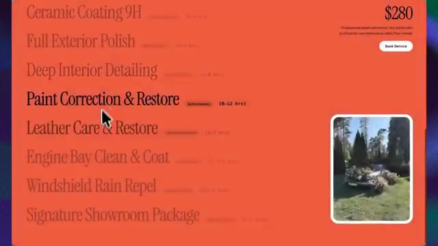
🔍 Agrandir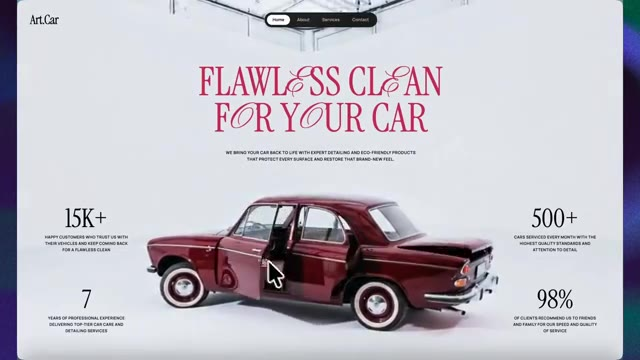
🔍 Agrandirun design complet. Donc au lieu de commencer avec un écran vide et de construire chaque section manuellement, vous pouvez donner une idée à l'IA et obtenir quelque chose qui ressemble déjà beaucoup plus à un site web fini. Et ce n'est qu'un exemple. Voici une autre génération de front-end, et celle-ci prend une direction complètement différente. Vous pouvez voir une interface propre et interactive avec un style visuel et une mise en page complètement différents. Et c'est ce que j'aime dans ces exemples. Astra ne se contente pas de répéter le même modèle de site web, il peut adapter le design en fonction de ce que vous lui demandez de construire.
Interface & Outils : Navigateur web affichant un design de site web et une publication sur le réseau social X (anciennement Twitter).
Contenu textuel & Code : Textes visibles : "Art.Car", "FLAWLESS CLEAN FOR YOUR CAR", "Ceramic Coating 9H $850", "GPT-6 Astra Is Finally Here (And It's REALLY Good)", "One-shot anything.", profil de Viktor Oddy (@viktoroddy), post d'OpenAI. Sur la troisième image : "Engineered for the Demands of Tomorrow", "How we manage your network efficiently".
Action / Démonstration : Défilement et présentation visuelle de différents modèles de sites web générés par l'intelligence artificielle Astra, illustrant la diversité des designs et des mises en page.
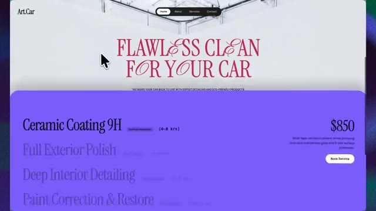
🔍 Agrandir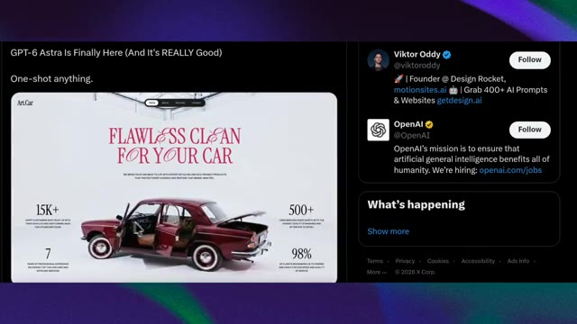
🔍 Agrandir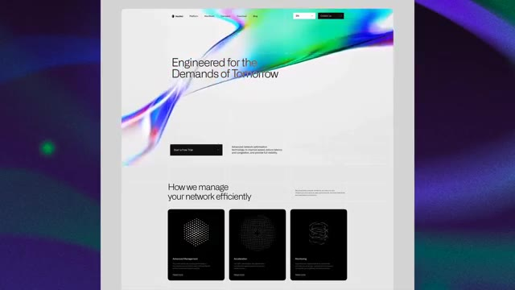
🔍 AgrandirEt honnêtement, après avoir vu tous ces exemples, nous avons couvert pas mal de choses. Et cela nous amène à la fin de notre regard sur GPT-6 Astra. Nous avons commencé par la génération 3D, puis sommes passés à Blender, au développement de jeux, à l'art numérique, et enfin au développement front-end. Et à travers tous ces exemples, une chose devient assez claire. L'IA va au-delà de la simple génération de pièces de contenu individuelles. Nous commençons à la voir fonctionner avec des environnements plus complexes, des flux de travail plus longs, de multiples outils et des expériences interactives réelles. Bien sûr, il y a encore des limitations,
Interface & Outils : Navigateur web, logiciel Blender, outils de simulation de ville et applications de génération 3D/graphique.
Contenu textuel & Code : Textes "Engineered for the Demands of Tomorrow", "How we manage your network efficiently", affichage de visualisations de données, interface Blender avec modélisation de train, mini-carte GPS et graphismes de paon en 3D.
Action / Démonstration : Présentation récapitulative des différents domaines d'application de l'IA (3D, Blender, jeux, art, front-end) à travers une grille d'interfaces dynamiques.
et ces exemples ne doivent pas être pris comme la preuve que l'IA peut remplacer des équipes créatives ou techniques entières du jour au lendemain. Mais la direction est vraiment intéressante, et si ces capacités continuent de s'améliorer, la façon dont nous créons des jeux, des mondes 3D, des sites web et du contenu numérique pourrait être très différente à l'avenir.
Interface & Outils : Écran composite affichant plusieurs interfaces logicielles et web simultanément (outils de modélisation 3D, cartes, site web interactif de paon 3D, simulation de conduite).
Contenu textuel & Code : Textes visibles sur le site web central : "Some beauty stays for you. A moment of wonder." et commandes de paramètres en bas à droite. Fenêtres miniatures en haut montrant un modèle de locomotive dans Blender, une carte urbaine, une vue satellite (dat.city) et un personnage anime.
Action / Démonstration : Présentation visuelle de multiples exemples de créations numériques et de mondes 3D générés ou modélisés, illustrant la diversité des outils présentés dans la vidéo.
Donc, si vous avez apprécié la vidéo, assurez-vous de l'aimer, de vous abonner à Pursuing AI, et de me dire ce que vous pensez d'Astra. Et je vous vois dans la prochaine. C'est Pursuing AI, et vous regardez le Research Report.
Interface & Outils : Écrans de démonstration multi-fenêtres intégrant divers outils de création 3D, des sites web de design et des animations de fin de chaîne YouTube (boutons Like/Subscribe/Notification).
Contenu textuel & Code : Éléments visuels variés : modèle 3D de ville sur dat.city, interface Blender, animation de personnage, dessin de Hatsune Miku, site web avec le texte "Some beauty stays for your... A moment of wonder", logo central "PAI" avec un cerveau.
Action / Démonstration : Présentation d'un montage vidéo récapitulatif montrant plusieurs projets et outils créatifs simultanément à l'écran, avec incrustation des boutons d'appel à l'action pour s'abonner.